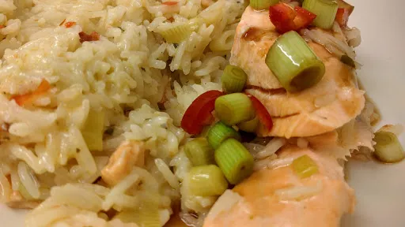

Thai salmon with coconut rice and green chilli dressing

Servings: 2
Total: 40 mins
Ingredients
- 2 tbsp olive oil
- 2 tbsp Thai red curry paste
- 4 spring onions, chopped
- 400 g can coconut milk
- ½ mug water
- 1 tbsp chopped fresh coriander leaves
- grated zest of a lemon
- 1 mug rice
- 2 salmon steaks
Dressing
- juice of a lemon
- 1 tbsp hoisin sauce
- 1 tsp sugar
- 3 spring onions, chopped
- 1 fat green chilli, cut into rings
Instructions
- Heat a little
oil2 tbsp
in a frying pan or large saucepan, add the curry paste2 tbsp
and fry for 30 second, stirring all the time. Add the spring onions4
and fry for another 30 seconds.
- Add the
coconut milk400 g can
, water½ mug
, chopped coriander1 tbsp
and lemon zest.
- Once boiling, add the
rice1 mug
and bring back to the point of simmering.
- Place the
salmon steaks2
on the top of the rice1 mug
. It doesn't matter if they sink down into the liquid a little, the rice1 mug
will soon absorb the liquid. Turn the heat down low and cover the pan with a lid or foil. Cook for 10-15 minutes.
- While the fish is cooking, make the dressing by mixing the ingredients together in a bowl.
- Once the
rice1 mug
and fish are cooked, serve the rice1 mug
with the fish on top and drizzle the dressing over.
Nosh for graduates
Short Link
Long Link